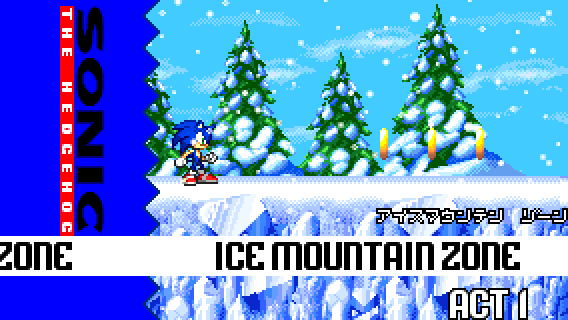
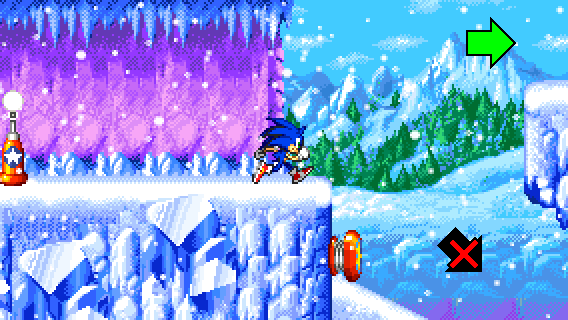
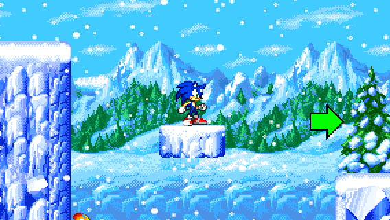
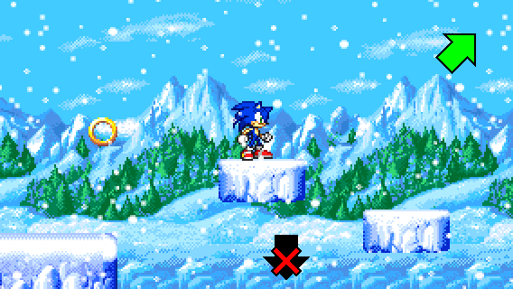
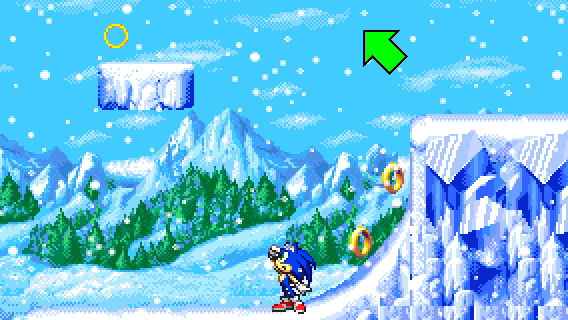
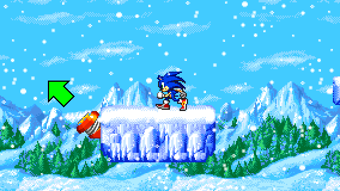
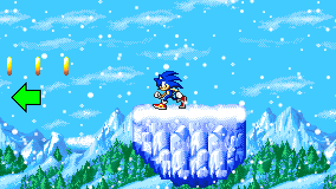
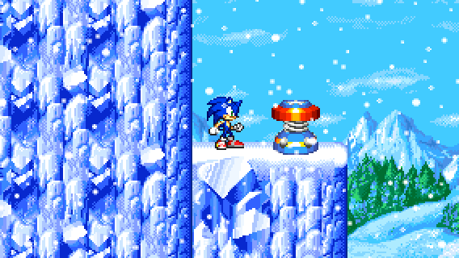
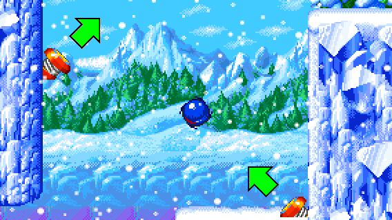

Location: Ice Mountain Zone Act 1
Difficulty: Very easy


Location: Ice Mountain Zone Act 1
Difficulty: Very easy

STEP 1:
After the first checkpoint, take the higher floor.

STEP 2:
Then, jump on the platform and go to the right. Stay on this path and don't go down.

STEP 3:
Jump up on moving platforms to reach the top right. Be careful not to fall or you won't be able to go back!

STEP 4:
After jumping on the moving platforms, you can see chained moving platforms above. You need to take one of the chained platforms spinning around and jump to the left side.


STEP 5:
Finally, all you need to do is to take the springs and jump off to the left from the last floating hill.
If you fell off during this step, repeat the previous steps based on where you are.

And voila! You found the Special Spring location!

RECOVERY:
If you fall off during STEP 2, take the diagonal springs to jump back up. Be careful not to fall to the left!